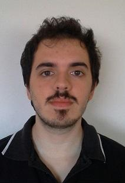

Nicolò Giuggiola
Luogo di Nascita: Pietra Ligure
Data di Nascita: 18 dicembre 1993
Residenza: Finale Ligure
Salita del Grillo 5, 6
Contatti
tel:+393471697175
email:draentir@gmail.com
Luogo di Nascita: Pietra Ligure
Data di Nascita: 18 dicembre 1993
Residenza: Finale Ligure
Salita del Grillo 5, 6
tel:+393471697175
email:draentir@gmail.com
Assunto, dal mese di luglio al mese di settembre, come responsabile della reception per il Residence Riviera (Pietra Ligure) anche con mansioni (in caso di necessità) di gestione dei collaboratori, manutenzione, aiuto barista, cameriere, portabagagli. Anno 2016.
Assunto dal mese di marzo al mese di agosto come aiuto receptionist per l'azienda Residence Riviera di Ofelia Dinu:
-Aiuto receptionist per il Residence Riviera (Pietra Ligure) anche con mansioni (in caso di necessità) di gestione dei collaboratori, manutenzione, aiuto barista, cameriere, portabagagli. Anno 2017.
-Aiuto receptionist per l'Hotel Arabesque (Finale Ligure-Varigotti). Solo mansione d'ufficio. Aprile 2017.
Assunto dal mese di giugno al mese di settembre presso Coop Liguria, punto vendita di Finale Ligure, con le mansioni di addetto vendita alle casse e rifornimento scaffali, reparto generi vari. Anno 2018.
Assunto dal mese di giugno al mese di agosto presso Coop Liguria, punto vendita di Finale Ligure, con le mansioni di addetto vendita alle casse e rifornimento scaffali, reparto generi vari. In seguito assegnato al reparto salumeria con mansioni di carico e scarico merci fresche/surgelate e rifornimento frigo. Anno 2019.
Guida turistica volontaria per F.A.I. Fondo Ambiente Italiano nelle rovine di Balestrino, sul set del film Inkheart (anno 2010) e nella collezione museale albenganese (anno 2011).
Servizio volontario per l’associazione Centro Storico del Finale, dove ho svolto varie mansioni, tra le quali ricerca storica, in particolar modo riguardante armeria medievale e HEMA(Historical European Martial Arts). Durante questa esperienza ho ricoperto diversi ruoli tra cui Responsabile dell’Armeria e componente del gruppo HEMA come membro anziano e istruttore a livello amatoriale.
Assistente volontario per la corsa di beneficenza «Finale for Nepal». Anno 2014.
Partecipazione, in equipe di ricerca internazionale (Stati Uniti, Canada, Italia), alla spedizione di scavo archeologico sul sito dei Balzi Rossi, del Prof. Fabio Negrino dell’Università di Genova. Anno di studio 2014/2015. Mansioni oltre l’attività di scavo: Riconoscimento e immagazzinamento dei reperti, compilazione di documenti e di schede informative del sito e dei reperti ritrovati, mappatura della zona di scavo, calcolo e mappatura delle quote dei livelli di scavo.
Partecipazione alla spedizione di scavo sul sito della fortezza del Priamar di Savona, del Prof. Carlo Varaldo dell’Università di Genova. Anno di studio 2013/2014. Mansioni oltre l’attività di scavo: Come sopra.
Svolto mansioni di riconoscimento, archiviazione e ricostruzione di frammenti ceramici nel Laboratorio di Paletnologia dell’Università di Genova, sotto la supervisione della Prof.ssa Giuliva Odetti. Anno di studio 2012/2013.
Svolto mansioni di lavaggio, riconoscimento, archiviazione e ricostruzione di frammenti ceramici nei laboratori del Museo Comunale di Finale Ligure, in merito al progetto di ricerca archeologica per il sito delle Arene Candide della Dott.ssa Chiara Panelli. Anno 2013/2014.
Svolto compito di inventario (Programma Excell) della collezione libraria per il Prof. Fabio Negrino. Università di Genova. Anno 2014/2015.